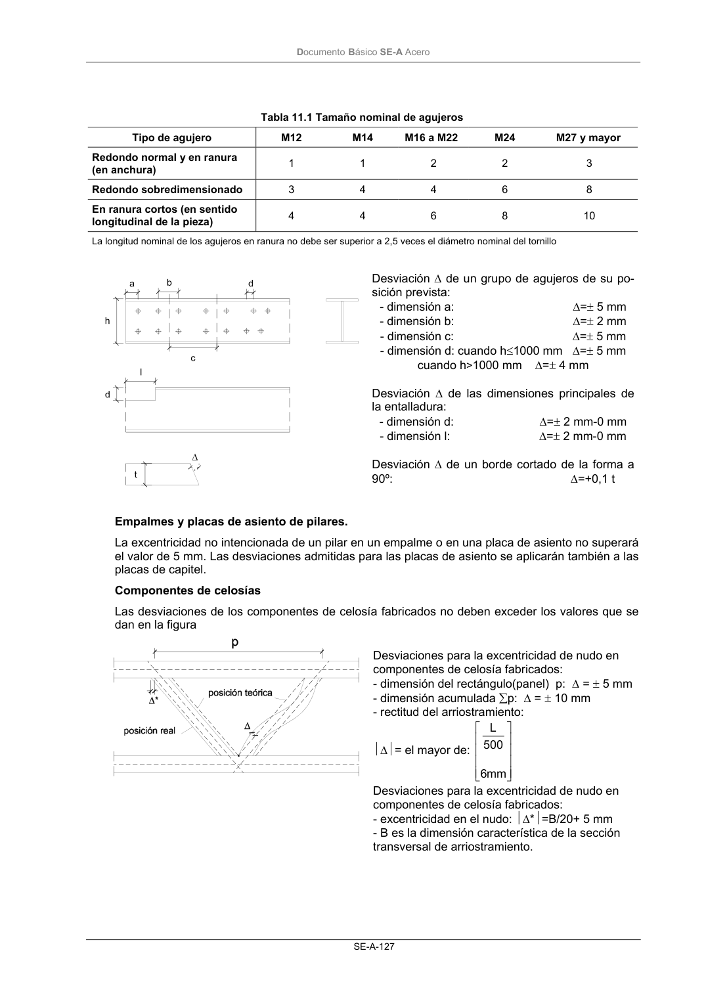

DB-SE-A Acero · edición 2007-10-23 · capa oficial
Documento DB-SE-A-oficial · SHA-256 del PDF 9ed9ea694aabfbda3bfbbef40dfe9223fde05d13c35bc2ba9751e5a96a22a64f
Página física 129 de 168.
Copia fiel del PDF fuente · Fuente oficial
Ficha de la disposición en la fuente oficial
Formato: Texto de la página (Markdown)
Documento Básico SE-A Acero SE-A-127 Tabla 11.1 Tamaño nominal de agujeros Tipo de agujero M12 M14 M16 a M22 M24 M27 y mayor Redondo normal y en ranura (en anchura) 1 1 2 2 3 Redondo sobredimensionado 3 4 4 6 8 En ranura cortos (en sentido longitudinal de la pieza) 4 4 6 8 10 La longitud nominal de los agujeros en ranura no debe ser superior a 2,5 veces el diámetro nominal del tornillo Desviación ∆ de un grupo de agujeros de su po- sición prevista: - dimensión a: ∆=± 5 mm - dimensión b: ∆=± 2 mm - dimensión c: ∆=± 5 mm - dimensión d: cuando h≤1000 mm ∆=± 5 mm cuando h>1000 mm ∆=± 4 mm Desviación ∆ de las dimensiones principales de la entalladura: - dimensión d: ∆=± 2 mm-0 mm - dimensión l: ∆=± 2 mm-0 mm Desviación ∆ de un borde cortado de la forma a 90º: ∆=+0,1 t Empalmes y placas de asiento de pilares. La excentricidad no intencionada de un pilar en un empalme o en una placa de asiento no superará el valor de 5 mm. Las desviaciones admitidas para las placas de asiento se aplicarán también a las placas de capitel. Componentes de celosías Las desviaciones de los componentes de celosía fabricados no deben exceder los valores que se dan en la figura Desviaciones para la excentricidad de nudo en componentes de celosía fabricados: - dimensión del rectángulo(panel) p: ∆ = ± 5 mm - dimensión acumulada ∑p: ∆ = ± 10 mm - rectitud del arriostramiento: ∆= el mayor de: mm 6 500 L Desviaciones para la excentricidad de nudo en componentes de celosía fabricados: - excentricidad en el nudo: ∆*=B/20+ 5 mm - B es la dimensión característica de la sección transversal de arriostramiento.

Datos candidatos: compruebe celdas y notas en el PDF.